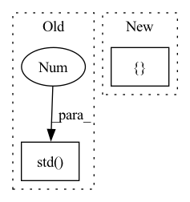

Pattern ID :34939

Before Change
w1 = w - w.view(w.size(0), -1).mean(-1).view(w.size(0), 1, 1, 1)
w2 = w1 / w1.view(w1.size(0), -1).std(-1).view(w1.size(0), 1, 1, 1)
a1 = a0 - a0.view(a0.size(0), -1).mean(-1).view(a0.size(0), 1, 1, 1)
a2 = a1 / a1.view(a1.size(0), -1).std(-1).view(a1.size(0), 1, 1, 1)
a, b = self.a, self.b
X = w2.view(w.shape[0], a, b)
if self.epoch > -1 and self.epoch % args.rotation_update == 0:
After Change
def forward(self, input):
a0 = input
w = self.weight
w1 = w - w.mean([1,2,3], keepdim=True)
w2 = w1 / w1.std([1,2,3], keepdim=True)
a1 = a0 - a0.mean([1,2,3], keepdim=True)
a2 = a1 / a1.std([1,2,3], keepdim=True)
In pattern: SUPERPATTERN
Frequency: 4
Non-data size: 2
Instances
Fragment ID: 100044855
Project Name: lmbxmu/rbnn
Commit Name: 6c9607902cf8cf520ec24c6d6fdc7ee2b3f9f9b5
Time: 2020-09-07
Author: 791411501@qq.com
File Name: imagenet/modules/binarized_modules.py
M Class Name: BinarizeConv2d
N Class Name: BinarizeConv2d
M Method Name: forward(2)
N Method Name: forward(2)
M Parent Class: nn.Conv2d
N Parent Class: nn.Conv2d
M File Name: imagenet/modules/binarized_modules.py
N File Name: imagenet/modules/binarized_modules.py
M Start Line: 32
M End Line: 57
N Start Line: 32
N End Line: 37
'>
Before Change
w1 = w - w.view(w.size(0), -1).mean(-1).view(w.size(0), 1, 1, 1)
w2 = w1 / w1.view(w1.size(0), -1).std(-1).view(w1.size(0), 1, 1, 1)
a1 = a0 - a0.view(a0.size(0), -1).mean(-1).view(a0.size(0), 1, 1, 1)
a2 = a1 / a1.view(a1.size(0), -1).std(-1).view(a1.size(0), 1, 1, 1)
a, b = self.a, self.b
X = w2.view(w.shape[0], a, b)
if self.epoch > -1 and self.epoch % args.rotation_update == 0:
After Change
w1 = w - w.mean([1,2,3], keepdim=True)
w2 = w1 / w1.std([1,2,3], keepdim=True)
a1 = a0 - a0.mean([1,2,3], keepdim=True)
a2 = a1 / a1.std([1,2,3], keepdim=True)
a, b = self.a, self.b
X = w2.view(w.shape[0], a, b)
if self.epoch > -1 and self.epoch % args.rotation_update == 0:
'>
Fragment ID: 100044823
Project Name: lmbxmu/rbnn
Commit Name: 6c9607902cf8cf520ec24c6d6fdc7ee2b3f9f9b5
Time: 2020-09-07
Author: 791411501@qq.com
File Name: cifar/modules/binarized_modules.py
M Class Name: BinarizeConv2d
N Class Name: BinarizeConv2d
M Method Name: forward(2)
N Method Name: forward(2)
M Parent Class: nn.Conv2d
N Parent Class: nn.Conv2d
M File Name: cifar/modules/binarized_modules.py
N File Name: cifar/modules/binarized_modules.py
M Start Line: 32
M End Line: 57
N Start Line: 32
N End Line: 37
'>
Before Change
gc = min(group_channels or n, n)
cc, g = c // channels, n // gc
y = x.view(gc, g, channels, cc, h, w)
return torch.cat([x, y.std(0, False).mean([2, 3, 4], True).squeeze(-1).repeat(gc, 1, h, w)], 1)
After Change
cc, g = c // channels, n // gc
y = x.view(gc, g, channels, cc, h, w)
y = y.var(0, False).add(epsilon).sqrt().mean([2, 3, 4], True).squeeze(-1).repeat(gc, 1, h, w)
return torch.cat([x, y], 1)
'>
Fragment ID: 100044821
Project Name: fzj-inm1-bda/celldetection
Commit Name: 954f3615e1930a39ee73325a349babae76b2af36
Time: 2022-04-02
Author: eric@upschulte.com
File Name: celldetection/ops/commons.py
M Class Name: AnonimousClass
N Class Name: AnonimousClass
M Method Name: minibatch_std_layer(4)
N Method Name: minibatch_std_layer(3)
M Parent Class:
N Parent Class:
M File Name: celldetection/ops/commons.py
N File Name: celldetection/ops/commons.py
M Start Line: 97
M End Line: 100
N Start Line: 77
N End Line: 102
'>
Before Change
s1_rep = target_agent.encoder(o1)
a1 = random.choice(agent.actors)(s1_rep).sample()
if discrete:
q_std = torch.stack(
[
q(s1_rep).gather(1, a1.unsqueeze(1).long())
for q in target_agent.critics
],
dim=0,
).std(0)
else:
q_std = torch.stack(
[q(s1_rep, a1) for q in target_agent.critics], dim=0
).std(0)
After Change
weights = torch.sigmoid(-q_std * weight_temp) + 0.5
elif weight_type == "softmax":
s1_rep = target_agent.encoder(o1)
q1s = []
for actor, critic in agent.ensemble:
a1 = actor(s1_rep).sample()
if discrete:
breakpoint()
'>
Fragment ID: 100044879
Project Name: jakegrigsby/super_sac
Commit Name: 819313070dbb7c72886cafb948c401c78eb03861
Time: 2021-10-12
Author: jcg6dn@virginia.edu
File Name: uafbc/learning_utils.py
M Class Name: AnonimousClass
N Class Name: AnonimousClass
M Method Name: compute_backup_weights(8)
N Method Name: compute_backup_weights(8)
M Parent Class:
N Parent Class:
M File Name: uafbc/learning_utils.py
N File Name: uafbc/learning_utils.py
M Start Line: 292
M End Line: 306
N Start Line: 278
N End Line: 304